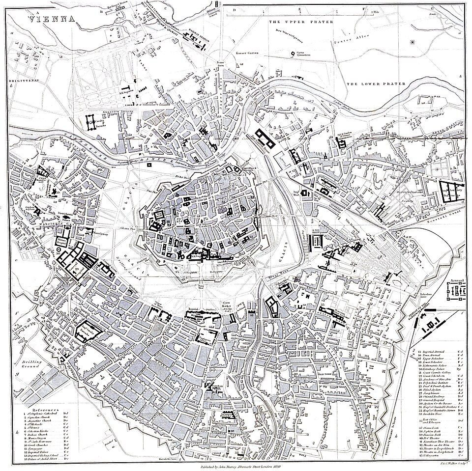
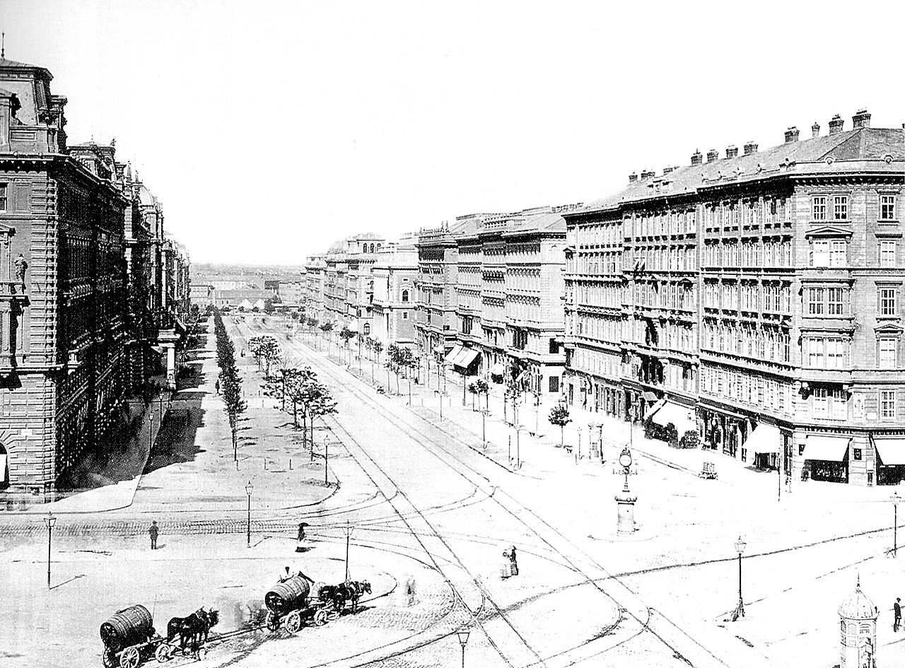
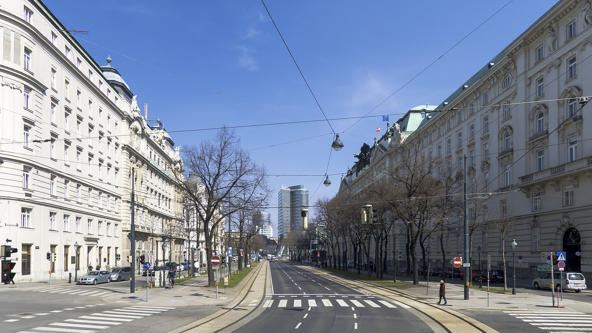
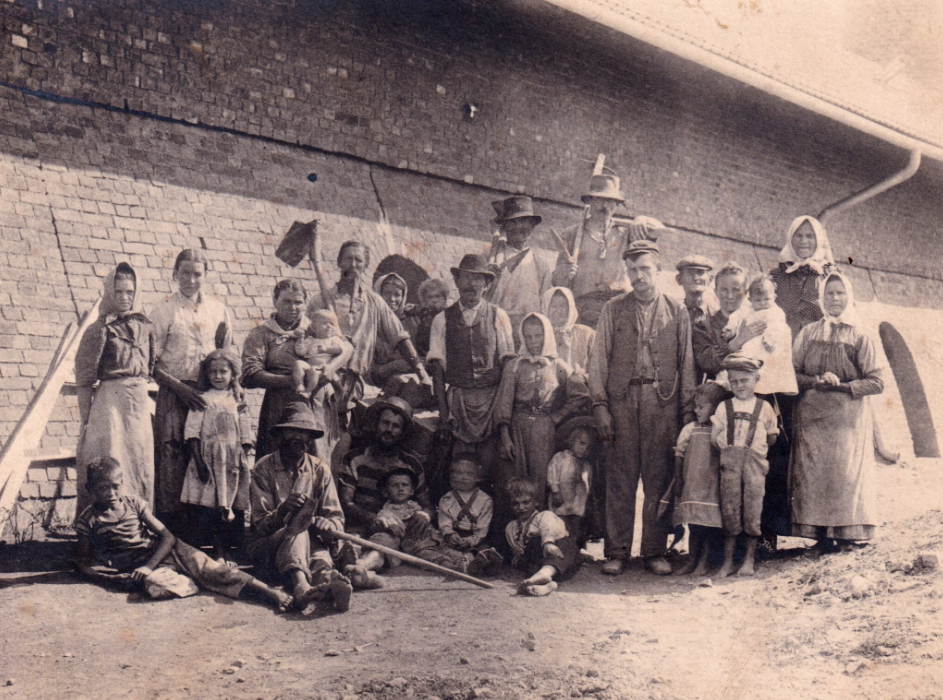
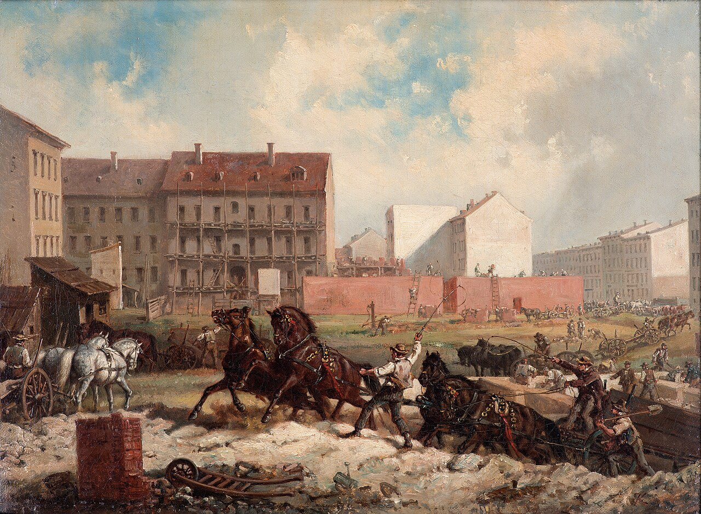
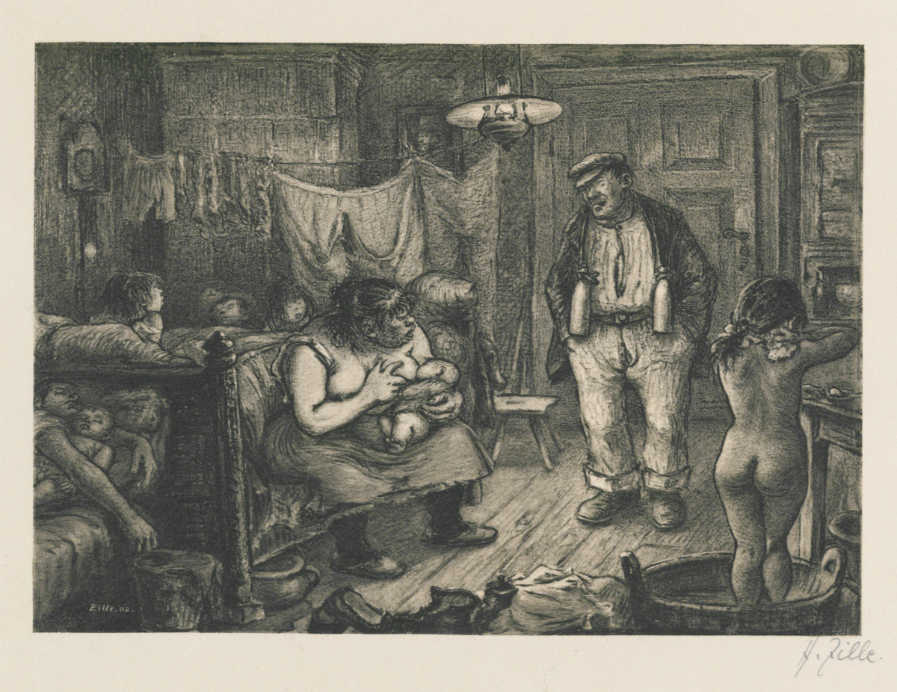
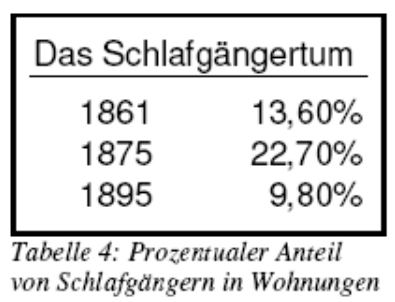
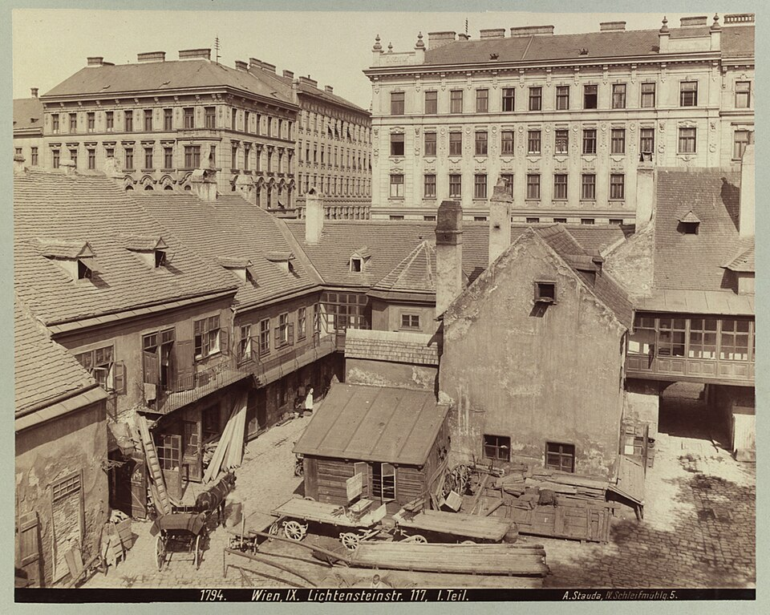
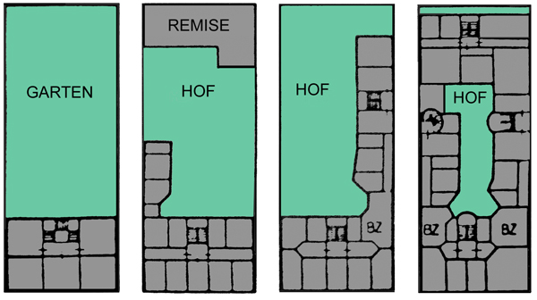
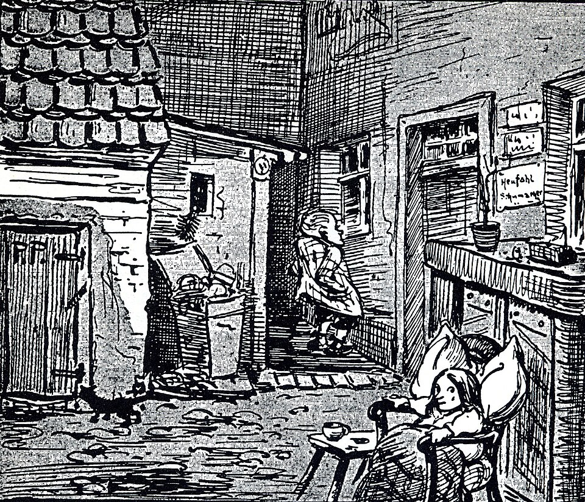

카페 첸트랄 (Cafe Central) 이야기 (3) - 혁명과 주택난
게시: 2026-08-27T06:30:58+09:00
대체 당시 빈의 주택 사정이 얼마나 나빴길래, 커피 한 잔 값조차 부담스러울 정도로 가난했던 트로츠키까지 카페 첸트랄로 출근을 했던 것일까요? 이야기는 나폴레옹 전쟁의 여파가 뒤늦게서야 터져나왔던 1848년 유럽 대혁명까지 거슬러 올라갑니다. 1848년 프랑스의 2월 혁명으로 오를레앙 왕가가 끝장 나자, 그에 고무된 유럽 각국에서는 너도 나도 혁명이 일어났고 오스트리아 빈도 예외가 아니었습니다. 특히 오스트리아는 체코, 헝가리, 이탈리아 등 다민족으로 구성된 제국이었으므로 상황이 더욱 복잡했습니다. 나폴레옹 몰락 이후 30년 넘게 유럽의 낡은 질서를 지켜왔던 빈 체제의 설계자 메테르니히조차 빈에서 일어난 3월 혁명으로 여장을 한 채 영국으로 망명을 떠나야 했습니다. 그래도 정신을 차리지 못한 황제 페르디난트 1세는 사람들의 기대에 미치지 못하는 헌법안을 내놓았다가 5월에 또 일어난 혁명으로 황실 가족들과 함께 빈에서 도주하는 신세가 되어야 했습니다. 그러다 헝가리 독립운동과 얽혀 벌어진 10월의 3차 혁명때, 결국 오스트리아 정규군과 크로아티아군이 대포까지 동원하여 빈을 공격, 약 2천 명의 시민들을 학살하고 혁명을 진압했습니다.

(1848년 5월의 2차 혁명때 빈의 골목길에 바리케이드를 치고 저항하는 시민군의 모습입니다.) 이 혁명의 여파로 페르디난트 1세가 퇴위하고 새로 즉위한 젋은 황제 프란츠 요제프 1세(Franz Joseph I)에게는 이 혁명의 기억이, 특히 좁은 골목길에 바리케이드를 쌓고 저항하는 시민들 때문에 골치가 아팠던 부분이 정말 지긋지긋하고도 모욕적인 것이었습니다. 1850년대, 때마침 당시 파리에서는 나폴레옹 3세와 오스만 남작이 대규모 도시 재개발(파리 개조 사업)을 단행하며 유럽의 스포트라이트를 받고 있었습니다. 파리와 경쟁도 할 겸, 1857년 프란츠 1세는 이제 방어용으로는 쓸모가 없어진 성벽을 철거하고, 그 공간에 도시를 순환하는 대로와 함께 의회, 시청, 오페라 극장, 박물관 등의 공공건물을 지으면서 빈의 고질적인 좁은 골목길을 대대적으로 정비했습니다. 소위 말하는 링슈트라쎄(Ringstraße, 환상 순환 거리) 공사였습니다. 그 대규모 건설 사업의 핑계는 빈의 발전을 위한 도시 정비였지만, 사실 주목적은 추후에 반복될 수 있는 소요 사태때 시위대가 좁은 길목을 바리케이드로 막는 것을 방지하고 군대와 대포의 투입을 용이하게 하기 위한 것이었습니다.

(1858년, 링슈트라쎄 공사가 시작되기 전 빈의 시가지를 보여주는 지도입니다. 아직 빈의 성벽이 보입니다.)

(1875년, 성벽이 있던 자리에 넓직한 도로가 들어서고 그 양 옆에 중산층을 위한 아파트를 건설해놓은 모습입니다.)

(링슈트라쎄의 총 9개 구간 중 하나인, 오늘날 빈 구시가지 동쪽 끝부분에 있는 슈투벤링(Stubenring)의 모습입니다. 성벽을 허물기 전 이곳에는 슈튜벤 성문(Stubentor)이 있었기 때문에 이런 이름이 붙었다고 합니다. 그러니까 파리나 빈이나 대충 19세기 후반에 오늘날의 모습이 얼추 완성된 셈입니다.) 이유야 어찌 되었건 이런 대규모 건설 사업에는 많은 자재 수요와 함께 많은 일자리를 만들어냈고, 그런 상황은 빈으로 사람들을 잔뜩 끌어모았습니다. 그렇게 도시가 급작스럽게 팽창하면 반드시 사회 문제가 생깁니다. 가령 그 중 하나가 지금도 역사책에 남아 있는 '치겔뵘'(Ziegelböhm, 벽돌 + 보헤미안이라는 뜻)이라는 비칭이었습니다. 이건 당시 링슈트라쎄 공사에 고용되었던 보헤미아(체코) 출신 벽돌공들을 가리키는 말이었는데, 이 용어는 처음엔 비칭이 아니었으나 곧 경멸의 의미가 담기게 되었습니다. 가난한 보헤미아 출신 노동자들이 공사에 많이 채용되었는데, 이들은 사실상 착취에 가까운 매우 낮은 임금과 형편없는 숙소에서 비참한 상태로 일을 했기 때문이었습니다.

('치겔뵘' 가족들의 모습입니다. 대부분의 사람들이 맨발인 것이 인상적입니다. 중앙에서 약간 오른쪽에 구두를 신었을 뿐만 아니라 조끼에 시계줄까지 차고 있는 사람은 감독입니다. 당시 빈 공사 현장에서 사용될 벽돌을 신속하게 구워내던 호프만식 순환가마(Hoffmann’schen Ringofen) 앞에서 기념 촬영을 한 것 같습니다.) 당연한 말이지만 오스트리아 제국내에도 변방은 가난한 곳이 많았는데, 점점 늘어나는 인구에 비해 부족한 경작지와 일자리로 인해 사람들은 일자리가 있는 곳이면 어디든 달려갔습니다. 이렇게 빈의 토목 공사뿐 아니라, 그 공사 결과 새로 들어선 관공서, 금융기관, 고급 상점 등에도 사람이 필요했고, 화려하고 쾌적해진 빈의 상류층의 편의를 봐줄 하인, 요리사, 마부 등의 온갖 서비스직 일자리도 폭발적으로 증가했습니다. 그렇게 늘어난 일자리는 더욱 많은 사람들을 빈으로 끌어들였고, 그렇게 늘어난 인구를 입히고 먹이기 위해 더 많은 돈과 믈자가 또 빈으로 집중되었습니다. 이렇게 인구가 집중되면서 더 많은 일자리가 생겨나는 선순환은 당연히 좋은 일이었습니다만, 세상일에 빛이 있으면 어둠도 있기 마련입니다. 1850년 경 43만 정도였던 빈의 인구는 1870년 경에는 90만으로 2배가 되었고, 1890년에는 다시 134만, 1910년 경에는 무려 200만을 넘었습니다. 빈의 인구는 이렇게 급증했지만, 주택 건설은 그 수준을 따라가지 못했습니다. 어디서나 토지는 유한한 것이었기 때문이었습니다. 1890년 경에는 빈의 외곽 지역까지도 빈으로 편입하기는 했지만, 이미 그 땅에도 몰려든 서민층이 열악한 환경 속에서 살고 있었으므로 주택 문제는 쉽게 해결되지 않았습니다.

(주택 공사가 전혀 없었느냐 하면 당연히 그렇지 않고 나름 활발했습니다. 하지만 당시 기술로는 고층 빌딩이 어려웠고, 또 뒤에 설명하겠지만 지주들이 굳이 고층 빌딩을 만들 이유도 없었습니다. 이 그림은 빈이 아니라 19세기 후반 베를린에서의 주택 공사 모습입니다.) 이렇게 인구가 기하급수적으로 불어났는데 주택 수는 크게 늘지 않았다면 당연히 주택 가격이 천정부지로 뛸 수밖에 없습니다. 그렇게 주택 매매가와 임차료가 뛰면 세입자들이야 죽어나지만 집주인들은 행복하겠지요? 문제는 집주인 수가 매우 적었다는 점이었습니다. 당시 빈 시민들 대부분은 세입자였습니다. 동서고금을 막론하고 평범한 중위층 노동자가 정직하게 일만 해서 돈을 모아 그 나라 수도에 집 한 칸 마련하는 것은 매우 어려운 일인데, 특히 당시엔 그냥 불가능했습니다. 그래도 빈 시민들 중 연소득이 현재 가치로 1억원 가까이 되는 하위 중산층(Kleinbürgertum, 소위 '쁘띠 부르조아')도 15% 정도 된다고 했는데, 그들은 검소하게 살면서 열심히 저축하면 집 한 채 정도는 살 수 있지 않았을까요? 역시 거의 불가능했습니다. 이건 당시 토지와 주택 가격이 너무 비싼 탓도 있지만, 당시 법과 제도 탓도 있었습니다. 당시 빈의 주택들 상당수가 3층짜리 4층짜리 건물에 여러 가구가 한 칸씩 차지하고 사는 일종의 아파트나 빌라 같은 것들이었는데, 당시 제도하에서는 그렇게 건물 하나를 구획으로 나누어 매매하는 것이 불가능했습니다. 그러니까 다세대 주택 건물 한 동 전체를 소유해야 했는데, 그게 가능한 것은 상위 중산층(Großbürgertum)도 어려웠고, 자자손손 부자였던 귀족들이나 대부호 정도나 되어야 가능했습니다. 그래서 빈 시민들 거의 대부분은 세입자였습니다. 가령 1870년 경 90만이던 빈 시민들 중 그런 임대 주택을 소유한 사람은 1만8천에 불과했습니다. 대략 2%의 시민이 빈 전체의 토지와 주택을 꽉 쥐고 있던 과점 상태였던 것입니다. 상황이 그렇다보니 일자리를 찾아 빈으로 몰려든 사람들은 정말 열악한 주거 환경에서 고생을 해야 했습니다. 수요는 넘치고 공급은 소수가 쥐고 있으니, 집주인들은 임대료를 마음껏 올렸고, 세입자를 내쫓는 것도 어렵지 않았습니다. 오늘날 서울도 주택 상황이 좋지 않습니다만, 당시 빈의 임대인과 임차인의 갑을관계는 현재 서울과는 비교가 안 될 정도로 극단적이었습니다. 대표적인 사례가 '베트게어'(Bettgeher, bett (침대) + geher(가는 사람, 방문객)) 또는 '쉴라프겡어툼'(Schlafgängertum, schlaf (잠) + gänger (가는 사람)), 즉 '잠자리만 빌리는 사람'이라는 제도입니다. 노동자 가정이 방 한 칸을 빌리고, 그 방의 침대를 낮과 밤으로 나눠 다른 사람에게 재임대하는 것입니다. 야간 근무를 마친 사람이 낮에 그 침대에서 자다가 저녁이 되면 일어나 출근하고, 그 자리에 야간 근무자가 들어와 눕는 식이었습니다. WW2 당시 잠수함 같은 곳에서나 벌어질 일이 당시 빈에서는 꽤 흔했던 것입니다.

(1902년 경 베를린의 노동자 계층 주거 환경을 묘사한 판화로서, 제목은 '늦게 귀가한 침대 대여자'입니다.)

(이것도 빈이 아니라 베를린의 통계입니다만, 해서, 1875년대에는 임대 주택내에 그렇게 침대만 빌리는 사람의 비율이 20%가 넘을 정도였습니다.) 더 나쁜 점은 이렇게 열악한 주거 환경이 개선될 기미가 보이지 않는다는 점이었습니다. 인류 역사상 어느 나라에서든 사람들은 결국 대도시, 특히 수도로 몰리기 마련이었는데, 대도시의 주택과 토지를 소수의 대부호가 과점하고 있을 경우 특히 주거 상황이 악화되기 쉬웠습니다. 그런 대부호는 그냥 앉아서 임대료만 올리면 되기 때문에 굳이 기존 건물을 부수고 더 높은 고층 빌딩을 올린다거나 인근에 새로운 시가지를 건설하여 인구 분산을 꾀한다든가 하는 노력을 할 필요를 별로 느끼지 못했던 것입니다. 또 당시 기술로는 5층 이상의 빌딩을 짓는 것이 어렵기도 했고, 또 사업가 정신이 있는 부호가 빈에 주택 건설을 한다고 해도 돈이 되는 주택, 즉 부유한 부르주아를 위한 고급 임대아파트만을 지었기 때문에 노동자들의 주거 개선은 철저히 외면당했습니다. 이미 토지 가격이 오를 대로 올라버린 시내는 포기하더라도, 빈의 팽창하는 외곽에는 노동자들을 위한 주택이 만들어지지 않았을까요? 만들어지긴 했습니다만, 그렇게 만들어진 주택은 주어진 좁은 토지에서 월세를 최대한 뜯어내기 위해 병영처럼 빽빽하고 답답하게 지은 저가형 임대 아파트로서, 보통 '친스카세르너'(Zinskaserne, zins(이익, 공물, 여기서는 월세) + kaserne(병영))라는 자조적 별명으로 불렸습니다. 이런 주택들은 대개 방 하나에 작은 입구 겸 부엌 하나 정도로서, 각각의 주택에는 화장실은 커녕 상하수도도 없었습니다. 보통 복도 끝에 수도꼭지 하나와 세면대가 있어서 수십 가구가 이 공동 세면대를 이용했으며, 화장실도 마찬가지였습니다.

(빈의 북쪽에 있는 리히텐슈타인슈트라쎄(Liechtensteinstraße)의 1900년대 모습입니다. 배경에 중산층을 위한 번듯한 임대 아파트들이 보입니다. 당시엔 쁘띠 부르주아 뿐만 아니라 그랑 부르주아, 가령 은행 간부 같은 사람들조차 자기집 마련이 어려웠습니다. 사진 앞쪽에 보이는 건물은 1층에는 뭔가 공방 같은 것이 있고 2층에는 다소 허름한 임대 주택이 있는 것처럼 보입니다.)

(이 그림은 19세기 말, 왼쪽부터 시간의 흐름에 따라 하나의 필지에 어떻게 노동자들을 위한 열악한 임대주택이 점점 들어서서 필지를 꽉 채우는지를 보여줍니다. Garten은 텃밭 내지는 정원이고, hof는 안뜰, 중정이며, remise는 마구간 또는 창고를 뜻합니다.)

(이 그림에서, 여자 아이가 앉은 공간은 노동자들을 위한 임대아파트의 가운데에 있는 마당(hof)으로서, 고급 주택이었다면 파티오(중정)이라고 불렸을 공간입니다. 당시 공동주택들은 ㅁ자 형태로 건물이 작은 마당을 둘러싸도록 만드는 경우가 많았거든요. 여기는 노동자들을 위한 저가형 임대아파트라서, 잡동사니와 쓰레기 등이 너저분합니다. 저기서 오빠로 보이는 꼬마가 창문에 대고 외치는 말은 아래와 같습니다. "엄마, 화분 두 개만 밖으로 꺼내줘요, 리쉔(Lieschen)은 풀밭에 앉아있는 걸 정말 좋아하잖아요!" 당시 노동자들의 열악한 주거 환경을 풍자하는 만화입니다.) 이런 비참한 상황 속에서 노동자들은 어떻게 황제 폐하 만세를 외치고 귀족들에게 고분고분 고개를 숙일 수 있었을까요? 아무리 배운 것이 없고 가난하더라도 귀족이나 노동자나 똑같은 사람이고 생각하는 것도 크게 다르지 않았으므로, 노동자들의 불만은 점점 끓어오르고 있었습니다. 그 결과, 오스트리아를 비롯한 유럽 각국에서는 공산주의 사상이 무섭게 번져나가고 있었습니다. 전에 트로츠키가 망명지로 원래는 베를린을 원했으나 거기는 경찰의 감시와 탄압이 너무 심하여 어쩔 수 없이 빈에 정착했다고 했지요. 독일에 비해 오스트리아는 공산주의에 대해 미온적인 태도를 보이고 있었을까요? 그럴 리가 있겠습니까? 다만 공산주의 탄압을 제1 과제로 여기던 독일과는 달리, 오스트리아는 공산주의 말고도 오스트리아가 독일 제국에 합병되어야 한다고 주장하는 범독일주의, 그리고 헝가리와 체코, 이탈리아, 세르비아와 크로아티아 등등 여기저기서 터져나오는 민족주의로 인해 정신이 없었을 뿐이었습니다. 하지만 결국 빈의 노동자 계층의 주거환경을 극적으로 바꾼 계기는 칼 맑스가 꿈꾸던 프롤레타리아 혁명이 아니었습니다. 전쟁이었습니다.
(다음 주에 이어집니다.)